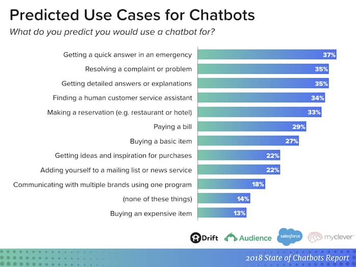

Web ChatBot using Rasa API
Say Hi
Start your conversation with a Hi, always. The chatbot, once initialized, understands very basic gestures - figuratively.
In this tutorial, you will learn how to train a basic model and start a conversation with the chatbot using Rasa, some HTML and Chatroom.js. A web application interface, that will help communication with the bot feel more friendly.
What are we going to use:
- Rasa Framework
- Chatroom.js component a little bit of addition
What we need - Prerequisites:
- Python - Obviously. This tutorial uses Python-3.7, you can use any other version of your choice.
- HTML - A basic html page of your choice. You can use my html page, if you don't already have one. This one already has Chatroom in it, which I will be later explaining.
- Package -
Virtualenv- This is always recommended when working on multiple version of packages as it should not break your python project already setup for another version.
Without wasting anymore time, lets dive in.
Introduction
You might feel the need to get in touch with your users more quickly or say, you need to provide best customer service, automating responses. Your reasons can be different but to achieve this with less efforts, you need the right tool.
Heres a report from Drift which show what are the most targeted application of ChatBots
To achieve this, there are multiple providers which can give you the same result. In the tutorial we will be using Rasa. As Rasa is an open source framework and with a great support community, it stands strong.
Let us quickly setup Rasa.
Installation
Considering you have python, pip already installed follow these steps. If you do not have python installed, Visit here download and install it.
First setup virtual environment:
virtualenv venv
Next, activate virtual environment:
source venv/bin/activate # For Linux
.\venv\Scripts\activate # For Windows
Install rasa:
pip install rasa
Install rasa x:
pip install rasa-x --extra-index-url https://pypi.rasa.com/simple
Here we complete the installation for the chatbot. Now lets create a project and further continue the quest
Start project:
rasa init --no-prompt
File Structure
In your present working directory (pwd) you now see a lot of files and directory that the command has created. Let us briefly go through each of them
\actions\actions.py This file represents the custom action or responses you which to send whenever you want to compute or fetch data from elsewhere. We will look into this in detail later.
\config.yml The config file defines what your model should have as components and policy to predict the users input. Right now we will use the file as is.
\credentials.yml When you need to integrate external applications with your chatbot, such as, Microsoft Teams, Slack, Facebook Messenger, Telegram, etc. you need to add the secret key and id in this file.
\data\nlu.yml or \data\nlu.md -
Depending on the version of Rasa, you will get the different set of file, in older version .md file was used. In the newer version it is changed to .yml.
This file contains the values to be mapped to the key. Take for example: if you say Good morning the prediction will try and change similar words defined in this file and map the key, which in this case is greet. In terms of chatbot it is an intent
Similarly, each intent should have one set of statement to understand the user input
\data\rules.ymlRules file was later integrated in Rasa to 2.x version. This is to generalize a conversation which the bot does not already have a response for.
\data\stories.ymlStories are predefined steps a must follow to interact with the user. A story contains Action and Intent. Actions are responses the bot send as messages, while Intents are set of statements which the user messages have.
\domain.yml Domain includes a list of all the intents, entities, slots, actions, and forms that the assistant knows about.
\models Models contain the zip file of the NLU data, configuration and components you define in the data files.
The command rasa train creates the zip files for you.
While the command rasa init was being executed, you could see some thing like this:
Let us understand what it does.
By default rasa has defined a basic set of intents, actions, story. This here is the model creation that we saw earlier in the \models folder. It will create a zip file of all the set of constrains in \data
As soon as the command completes its execution, it will show you, to run the rasa shell command and start conversation. Which means you ready to roll.
By Default rasa creates a file with the current <__timestamp__>.zip file. If you wish you to change the path, that you can run the rasa train command with arguments --out.
You can add --fixed-model-name to name the model.
It will either choose core or nlu data, unless specified.
APIs
To create channel for communicating with the ChatBot Server, you can create a HTTP API. You can send and receive messages over this API and train models.
API endpoints are not enabled by default. Endpoints are defined in the file credentials.yml and they are exposed webhook/rest/webhook
rest:
# you don't need to provide anything here - this channel doesn't
# require any credentials
To enable lets fire up the rocket, Run the following commands to start the chat api:
rasa run actions -vv
Command starts the action server, where your custom actions are ready to respond
rasa run -m models --enable-api --cors "*" -p 5021
Command starts api with latest model file.
Notice the --cors. This will let you communicate over different server. If not you can only send and receive messages on the same server as rasa.
The "*" opens for all servers. You can specify a single server ip address.
-p Lets you define what port number you want to expose the api. This in my case where my server is already allowed communication over 5021
Lets understand the actions.py file for which the above two commands have been used.
from typing import Any, Text, Dict, List
from rasa_sdk import Action, Tracker
from rasa_sdk.executor import CollectingDispatcher
class ActionHelloWorld(Action):
def name(self) -> Text:
return "action_hello_world"
def run(self, dispatcher: CollectingDispatcher,
tracker: Tracker,
domain: Dict[Text, Any]) -> List[Dict[Text, Any]]:
dispatcher.utter_message(text="Hello World!")
return []
class FetchFromDatabase(Action):
def name(self) -> Text:
return "fetch_location_restaurants"
def run(self, dispatcher: CollectingDispatcher,
tracker: Tracker,
domain: Dict[Text, Any]) -> List[Dict[Text, Any]]:
restaurant = str((tracker.latest_message)['text']).split("Provide me Menu of")[1].strip()
import sqlite3
conn = sqlite3.connect('hotel.db')
data = conn.execute("SELECT FOOD_ITEM, PRICE, IMAGE FROM HOTEL_INFO WHERE RESTAURANTS='" + restaurant +"'")
for i in data:
dispatcher.utter_message(text=str(i[0] + ", " + i[1]), image=i[2])
return []
- Here at the beginning of the code you can see some import statements, these are normal rasa packages that are required
- The class name can be anything you wish to define
- Next important thing is the name of the function,
action_hello_worldThis is a custom function name for your custom action that you need to define in thedomain.ymlfile. In the story you create, when it requires to send a response message it will try to search in the actions.py file and perform its operation. - In the default
runfunction you need to add your code and compute your response to be dispatched. - With the tracker argument you can fetch all the latest messages, the intent, the slot and more. This will be helpful in understanding the previous message and what action needs to be taken accordingly.
tracker.latest_message.get("text")will provide the string of last bot or user messages.tracker.eventsgive the entire conversation.tracker.sender_idcontains the unique id created for the conversation.
These line will get you the message input by the user, similarly you can get all the messages of the bot using thefor event in (list(reversed(tracker.events))):
if event.get("event") == "user": # change 'user' to 'bot' for message responses of only the chat server
last_messages.append(event.get("text"))
print("Messages", last_messages)event.get("event") == "bot"statement.
- The second class
FetchFromDatabaseis from our working example where depending in the selection we are fetching from the database the details of the restaurant. - The last and the final statement
dispatcher.utter_message()will send a response via the API to the user. This function takes input of text and image, as shown in the example. A valid image path is expected.
Chat UI
Now that your chat api is exposed and open for messages, lets get to the last part to display the chat window and interact with Rasa server.
For this you need to get a copy of the Chatroom.js and Chatroom.css from the creator's GitHub page.
Also you need an HTML page where you will embed the Chatroom to configure it and connect to your Rasa Server. Grab a copy for the file here.
Now lets understand what have we got here and what you might need to modify.
{kind=link}
- Jquery is required for the basic functionality for .js files in the script tag.
- The
Chatroom.cssfile is required for the UI of the chat window, the color, the font - The
divtag will place the Chat window where you wish it to be embed in the html page - The
Chatroom.jsfile you will need to add to your script tag before calling the chatroom.Window function. This file has the functionality for sending and receiving the messages. - The url for the Rasa server where I have previously asked you to start the
rasa run -m modelscommand. Right now where you are running the server will be your local serverlocalhost. Later in case if you run it on a separate server you will need to add the IP address here.
Make sure to expose the port number - A default welcome message you wish the chatbot to greet you with.
- This is an extra functionality added to start sending message on your behalf to your rasa server. The response to this message will be your actual response from the server, with a API call.
CONGRATULATION!! With this we complete the Rasa ChatBot working and you have your own assistant.
If you wish to get the Source Code of this tutorial. Click here
Make the most of this and let me know in case if you have any issues. Also let me know your feedback here
Credits
The restaurants database used in the ChatBot is the idea of Aqib Ahmed.
Rasa's Reference Documentations will give you more details
The ChatUI is possible with the help of Chatroom.js